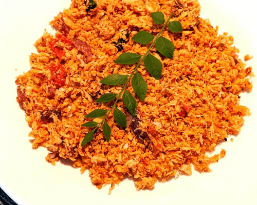

Coconut Sambal
Coconut sambal (pol sambal) is served with nearly every meal in Sri Lanka. Try Peter Kuruvita’s version with egg hoppers for a brunch with a difference.
Jacfuit Curry

Make a vegan Sri Lankan feast tonight, with a jackfruit curry recipe You'll need plenty of fresh spices
Mutton Roll

Peter Kuruvita’s Sri Lankan mutton rolls, teeming with potatoes, lamb mince, mint leaves and green chillies in a breadcrumb coating, are a must in your Sri-Lankan-style feast at home.